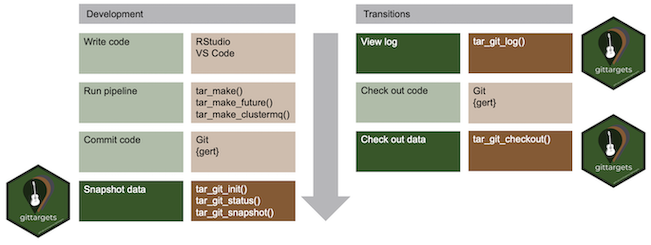

This tutorial shows how to use gittargets with the Git-based data versioning backend. Before proceeding, please read the README file or documentation website front page for an overview of the package and the workflow diagram for data analysis projects.

Please begin with the installation instructions on the documentation website. In addition, if your targets pipeline generates large data files, consider installing git-lfs. The Git data backend in gittargets automatically opts into git-lfs, so you should not need to do any manual configuration to reap the performance benefits.
To begin development, we write _targets.R file for a targets pipeline. targets can handle large complex pipelines for machine learning, Bayesian data analysis, and much more. However, this tutorial focuses on a much simpler pipeline for the sake of pedagogical simplicity.
# _targets.R
library(targets)
list(
tar_target(data, datasets::airquality),
tar_target(result, summary(data))
)With our target script in hand, we run the pipeline.1
tar_make()
#> • start target data
#> • built target data
#> • start target result
#> • built target result
#> • end pipeline
#> We inspect the output with tar_read().
tar_read(result)
#> Ozone Solar.R Wind Temp
#> Min. : 1.00 Min. : 7.0 Min. : 1.700 Min. :56.00
#> 1st Qu.: 18.00 1st Qu.:115.8 1st Qu.: 7.400 1st Qu.:72.00
#> Median : 31.50 Median :205.0 Median : 9.700 Median :79.00
#> Mean : 42.13 Mean :185.9 Mean : 9.958 Mean :77.88
#> 3rd Qu.: 63.25 3rd Qu.:258.8 3rd Qu.:11.500 3rd Qu.:85.00
#> Max. :168.00 Max. :334.0 Max. :20.700 Max. :97.00
#> NA's :37 NA's :7
#> Month Day
#> Min. :5.000 Min. : 1.0
#> 1st Qu.:6.000 1st Qu.: 8.0
#> Median :7.000 Median :16.0
#> Mean :6.993 Mean :15.8
#> 3rd Qu.:8.000 3rd Qu.:23.0
#> Max. :9.000 Max. :31.0
#> We usually iterate between writing code and running the pipeline until we have a decent set of results. After that, we commit the code to a Git repository, which may or may not live on GitHub.2 Happy Git with R is a great way to learn Git, and the gert package is a convenient way to interact with Git from R.
library(gert)
git_init()
git_add("_targets.R")
git_commit("Begin analyzing the airquality dataset")
git_branch_create("airquality")Before we snapshot the data, we should check that the code is up to date in the Git repository and the targets are up to date in the pipeline. The tar_git_status() function is an easy way to do this.3
tar_git_status()
#>
#> ── Code Git status ─────────────────────────────────────────────────────────────
#> ✔ Code repository is clean.
#>
#> ── Outdated targets ────────────────────────────────────────────────────────────
#> ✔ All targets are up to date.
#>
#> ── Data Git status ─────────────────────────────────────────────────────────────
#> ✖ No Git repository for the data store.
#> ! The code and the data store must both be Git repositories.
#> ! Create the code repository with `gert::git_init()`.
#> ! Create the data repository with `gittargets::tar_git_init()`.Our code and pipeline look ready for a data snapshot. First, we initialize the data repository with tar_git_init(). tar_git_init() writes a .gitattributes file in the data store that automatically opts into git-lfs. If you have git-lfs but do not wish to use it, please remove the .gitattributes after calling tar_git_init().
tar_git_init()
#> ✔ Created data store Git repository
#> ✔ Wrote to _targets/.gitattributes for git-lfs: <https://git-lfs.github.com>.
#> ✔ Created stub commit without data.
#> • Run tar_git_snapshot() to put the data files under version control.Then, we create our first data commit with tar_git_snapshot().4
#> • Creating data branch code=2f60ea40ea982de6c3f0afa494f8c9f6806e83c9.
#> • Staging data files.
#> ✔ Staged 6 files in the data store.
#> • Committing data changes.
#> ✔ Created new data snapshot 7c60b06772fca975d06a0c31a6abc76ad6e36d8a.In the Git data backend, a data snapshot is a special kind of Git commit. Each data commit is part of a data branch, and each data branch is specific to the current code commit. In fact, each data branch name is of the form "code=<SHA1>", where <SHA1> is the Git SHA1 hash of the corresponding code commit. You can always create a data snapshot, but it will supersede any prior data snapshot you already have for the current code commit. To revert to a previous data snapshots for a given code snapshot, you will need to manually enter the repository and check out the relevant data commit.
Development typically happens in cycles: develop the code, run the pipeline, commit the code, snapshot the data, and repeat. Not all code commits need a data snapshot, especially if the targets pipeline generates a lot of data. But even then, it is helpful to snapshot the data at key milestones, e.g. if an alternative research question comes up and it is desirable to create a new Git branch for the code. For example, suppose we wish to apply the same pipeline to a different dataset. The code changes:
# _targets.R
library(targets)
list(
tar_target(data, datasets::UKgas), # different dataset
tar_target(result, summary(data))
)We run the pipeline and inspect the new output.
tar_make()
#> • start target data
#> • built target data
#> • start target result
#> • built target result
#> • end pipeline
#>
tar_read(result)
#> Min. 1st Qu. Median Mean 3rd Qu. Max.
#> 84.8 153.3 220.9 337.6 469.9 1163.9We put the code in a new Git branch.
git_branch_create("UKgas")
git_add("_targets.R")
#> # A tibble: 1 × 3
#> file status staged
#> <chr> <chr> <lgl>
#> 1 _targets.R modified TRUE
git_commit("Switch to UKgas dataset")
#> [1] "1e307a6d4f20eabbea93db630f9ad61d7e425359"Finally, we create a data snapshot for the new code commit.
#> • Creating data branch code=1e307a6d4f20eabbea93db630f9ad61d7e425359.
#> • Staging data files.
#> ✔ Staged 5 files in the data store.
#> • Committing data changes.
#> ✔ Created new data snapshot 43953c33faa9f4187db2e42faee42fd76213db0f.Now, suppose we want to switch the project back to the original dataset (airquality). To transition completely, we need to revert both the code and the data. If we only revert the code, then the data store will sill reflect the UKgas dataset, and none of our targets will be up to date. At this point, it is a good time to pause and check the gittargets log to see which code commits have available data snapshots.5
tar_git_log()
#> # A tibble: 2 × 5
#> message_code time_code time_data commit_code commit_data
#> <chr> <dttm> <dttm> <chr> <chr>
#> 1 Switch to UK… 2021-11-17 18:46:23 2021-11-17 18:46:23 1e307a6d4f2… 43953c33fa…
#> 2 Begin analyz… 2021-11-17 18:46:19 2021-11-17 18:46:21 2f60ea40ea9… 7c60b06772…To check out the old airquality code, we use gert::git_branch_checkout().
git_branch_checkout("airquality")But because we did not revert the data, our results still reflect the UKgas dataset.
tar_read(result)
#> Min. 1st Qu. Median Mean 3rd Qu. Max.
#> 84.8 153.3 220.9 337.6 469.9 1163.9Thus, all our targets are out of date.
tar_outdated()
#> [1] "result" "data"To bring our targets back up to date with the airquality data, instead of beginning a potentially long computation with tar_make(), we can check out the data snapshot that matches our current code commit.
tar_git_checkout()
#> ✔ Checked out data snapshot 7c60b06772fca975d06a0c31a6abc76ad6e36d8a.
#> • Code commit: code=2f60ea40ea982de6c3f0afa494f8c9f6806e83c9
#> • Message: Begin analyzing the airquality datasetNow, our results reflect the airquality dataset we previously analyzed.
tar_read(result)
#> Ozone Solar.R Wind Temp
#> Min. : 1.00 Min. : 7.0 Min. : 1.700 Min. :56.00
#> 1st Qu.: 18.00 1st Qu.:115.8 1st Qu.: 7.400 1st Qu.:72.00
#> Median : 31.50 Median :205.0 Median : 9.700 Median :79.00
#> Mean : 42.13 Mean :185.9 Mean : 9.958 Mean :77.88
#> 3rd Qu.: 63.25 3rd Qu.:258.8 3rd Qu.:11.500 3rd Qu.:85.00
#> Max. :168.00 Max. :334.0 Max. :20.700 Max. :97.00
#> NA's :37 NA's :7
#> Month Day
#> Min. :5.000 Min. : 1.0
#> 1st Qu.:6.000 1st Qu.: 8.0
#> Median :7.000 Median :16.0
#> Mean :6.993 Mean :15.8
#> 3rd Qu.:8.000 3rd Qu.:23.0
#> Max. :9.000 Max. :31.0
#> And all our targets are up to date.
tar_outdated()
#> character(0)If your targets pipeline generates large data files, consider installing git-lfs. Once you install git-lfs, it should just work on your project right out of the box because tar_git_init() writes the following to _targets/.gitattributes:
In addition, every data snapshot with tar_git_snapshot() creates a new Git branch. With thousands of commits and thus thousands of branches, performance may suffer. If you notice slowness, run git pack-refs --all on the targets data store repository.
http://books.ropensci.org/targets/hpc.html describes heavy-duty alternatives to tar_make().↩︎
Alternatives to GitHub include GitLab and Bitbucket.↩︎
Helper functions tar_git_status_code(), tar_git_status_targets(), and tar_git_status_data() each generate a piece of the tar_git_status() output.↩︎
Ordinarily, tar_git_snapshot() shows runs tar_git_status() and prompts the user to confirm the snapshot. But in this example, we skip this step.↩︎
If you chose not to call tar_git_snapshot() for some code commits, then not all your code commits will have available data snapshots.↩︎